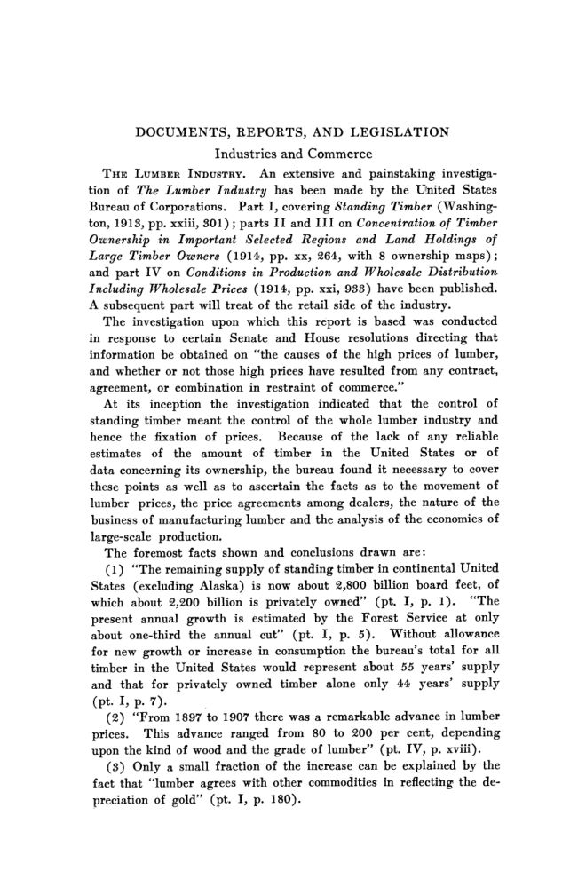

Março de 1915: futuros de algodão, ferrovias, crédito rural e a Lei Clayton
Leitura: 11 min
Conant explica a lei que pôs a bolsa de algodão sob o secretário da Agricultura, Sakolski discute o valor das ferrovias, Putnam mede o crédito rural no Kansas e Stevens analisa a Lei Clayton.


Em 18 de fevereiro de 1915, a New York Cotton Exchange passou a negociar contratos futuros por regras em grande parte ditadas por uma lei federal. Segundo Luther Conant Jr., que abre o número de março da American Economic Review, a bolsa só cedeu diante da alternativa de um imposto proibitivo. A United States Cotton Futures Act, aprovada na sessão anterior do Congresso, entregou ao secretário da Agricultura o poder de fiscalizar o contrato.
Os quatro artigos da edição tratam de regras públicas para mercados privados. Depois de Conant, A. M. Sakolski examina os problemas econômicos da avaliação das ferrovias ordenada pelo Congresso em 1913. George E. Putnam, da University of Kansas, apresenta um levantamento sobre o crédito rural no estado. W. H. S. Stevens, da Columbia University, conclui sua análise da nova legislação antitruste com a Lei Clayton. Seguem resenhas organizadas por área, listas de livros novos, documentos oficiais, resumos de periódicos e notas.
Por que o governo passou a fiscalizar o contrato de algodão?
Luther Conant Jr. · “The United States Cotton Futures Act” · pp. 2–11
Conant parte de um mercado que encolheu. Nova York vendia mais de 430 mil fardos de algodão físico por ano na década de 1870; nos anos 1890, a média caiu para menos de 160 mil. Fretes diretos do Sul para as fiações e a mudança da indústria têxtil para os estados produtores explicam a queda. A bolsa sustentava que sua utilidade estava no capital bancário, no câmbio e na clientela especulativa da cidade, mas precisava de algum estoque físico para garantir as entregas.
O contrato futuro de algodão é um contrato de base. O vendedor entrega o tipo padrão, o middling, ao preço do contrato, ou outros tipos com diferenças a mais ou a menos, à sua escolha. Conant considera esse desenho inevitável, porque a proporção de cada tipo na safra muda com tempestades e geadas, e um contrato de tipo específico deixaria os vendedores à mercê de cercos de mercado. A questão está em como fixar as diferenças. Liverpool e Nova Orleans usam as diferenças comerciais do mercado físico. Nova York passou a fixá-las por um comitê de revisão que, a partir de 1897, só se reunia duas vezes por ano.
Diferenças fixadas por decreto se afastavam do mercado. O vendedor entregava os tipos sobrevalorizados, o comprador descontava o risco no preço e o contrato se depreciava em relação ao algodão físico. Com isso, o hedge, que Conant considera a função principal do mercado futuro, deixava de proteger. Na safra de 1906–1907, a margem entre o middling físico e o futuro do mês corrente chegou a quase 2 centavos, com grandes perdas para os comerciantes.
A nova lei manda usar as diferenças comerciais reais e, quando o mercado local for estreito demais, a média de pelo menos cinco praças designadas pelo secretário da Agricultura. Exige que cada fardo entregue seja identificado com seu tipo e cobra 2 centavos por libra-peso dos contratos fora das regras. Conant conclui que a melhora é praticável se a bolsa cooperar, e deixa em aberto se o poder dado a um ministro levará a um controle mais estreito de outras bolsas.
Quanto vale uma ferrovia?
A. M. Sakolski · “Some Economic Problems of Railroad Valuation” · pp. 12–26
Em 31 de março de 1913, o Congresso mandou a Interstate Commerce Commission apurar e relatar o valor de toda a propriedade das ferrovias sujeitas à lei de comércio interestadual. A lei pede, para cada bem, o custo original, o custo de reprodução novo e o custo de reprodução menos depreciação, além do valor das terras. Sakolski deixa de lado o procedimento técnico e trata dos problemas econômicos que, a seu ver, ainda não tinham sido resolvidos.
O primeiro é a terminologia. A lei não limita o sentido de valor, e tribunais, comissões e legislaturas confundem custo e valor com frequência. A Suprema Corte, no caso Smith v. Ames, listou elementos do valor justo, como o custo de construção, o valor de mercado das ações e títulos e a capacidade de lucro, sem dizer quanto pesa cada um. Sakolski examina quatro questões: a base do custo de reprodução, os custos não físicos, a depreciação e a apreciação, e as terras.
Na reprodução, a dúvida é se o avaliador deve supor as condições reais da construção original ou as atuais. O engenheiro H. P. Gillette defende as primeiras: se houve árvores a derrubar, o custo entra, ainda que nenhuma árvore reste. Os críticos entendem reprodução como reposição no presente, e Whitten propõe um meio-termo, o custo real normal. Sakolski lembra que, numa obra grande, a mão de obra escassa e menos eficiente encarece cada unidade.
Entre os custos não físicos, Sakolski destaca o valor de empresa em funcionamento, que o Tribunal de Apelações de Nova York associou às perdas dos anos magros até o negócio se firmar, e os custos de desenvolvimento, como a perda ao trocar uma linha de bitola estreita pela padrão depois que a primeira povoou a região. Na depreciação, separa a contábil, que forma um fundo de reposição, da de engenharia, que mede o estado da propriedade numa data. A apreciação também conta: Minnesota reconheceu US$ 11.743.007 pela consolidação do leito. Nas terras, a decisão do caso das tarifas de Minnesota desaprovou os multiplicadores, de 25% a mais de 300% sobre o preço dos terrenos vizinhos; avaliar parcela por parcela, prevê Sakolski, será caro.
Quanto pagava pelo crédito o agricultor do Kansas?
George E. Putnam (University of Kansas) · “Farm Credit in Kansas” · pp. 27–37
Na primavera de 1914, o departamento de economia da University of Kansas enviou questionários a banqueiros, comerciantes e agricultores dos 105 condados do estado, para verificar se o sistema de crédito prejudicava os agricultores. Responderam 179 banqueiros, 122 agricultores e 80 comerciantes, com pelo menos um banqueiro e um agricultor por condado.
O empréstimo hipotecário, de US$ 100 a US$ 10.000, costuma ter prazo de cinco anos e juros de 6% a 10%. A taxa sobe do norte para o sul e do leste para o oeste. No leste, as seguradoras de vida emprestam até 40% ou 45% do valor da terra a 5% ou 5,5%, mas a comissão do agente, de 5% em cinco anos, acrescenta um ponto ao ano. No oeste, onde o valor da terra é incerto, o capital de fora quase não entra, e os banqueiros preferem penhor de bens móveis e notas pessoais.
O crédito de curto prazo vem dos bancos, a 7% a 10%, em geral por três ou seis meses e com renovação frequente, e dos comerciantes. Segundo 80 comerciantes de insumos, só 25% a 30% das vendas são à vista; o preço a prazo dos implementos fica de 5% a 10% acima do preço à vista. Perguntados se os juros eram altos, 122 banqueiros disseram que não e 50 que sim; entre os agricultores, 71 os consideraram altos demais e 43 se disseram satisfeitos.
Putnam aponta a especulação com terras: um terreno que rende US$ 3 de aluguel por acre é vendido por mais de US$ 100, e a parcela de fazendas arrendadas subiu de 16,3% em 1880 para 36,8% em 1910. Também elevam a taxa a tributação da propriedade pessoal, que afasta o capital local, o prazo de 18 meses para o devedor resgatar a terra executada e as isenções amplas contra cobrança. Ele julga prematuras as cooperativas de crédito, sugere o registro de títulos pelo sistema Torrens e defende que o crédito de longo prazo com amortização seja tarefa federal.
O que a Lei Clayton acrescentou à Lei Sherman?
W. H. S. Stevens (Columbia University) · “The Clayton Act” · pp. 38–54
É o segundo de dois estudos de Stevens sobre a nova legislação antitruste; o primeiro, sobre a Trade Commission Act, saiu em dezembro de 1914. O deputado Clayton apresentou o projeto em 14 de abril de 1914. A Câmara o aprovou em 5 de junho, por 277 votos a 54, e o Senado no início de setembro, por 46 a 16. O relatório da comissão de conferência passou no Senado por 35 a 24 e na Câmara, em 8 de outubro, por 244 a 54. O presidente sancionou a lei em 16 de outubro.
A lei proíbe a discriminação de preços entre compradores, os contratos de exclusividade e as vendas casadas, a compra de ações de empresas concorrentes e certas diretorias entrelaçadas em bancos e grandes empresas, sempre que o efeito possa ser reduzir substancialmente a concorrência ou tender ao monopólio. Para Stevens, boa parte disso duplica a Lei Sherman, como mostram as sentenças contra a General Electric e a American Thread, e a cláusula de concorrência desleal da Trade Commission Act. Duas exceções importam: a expressão possa ser alcança atos que a Lei Sherman não alcançaria, e a proibição das vendas casadas era necessária porque a Suprema Corte as admitira no caso Henry v. Dick.
A execução fica com a Federal Trade Commission, a Interstate Commerce Commission no caso das ferrovias e o Federal Reserve Board no caso dos bancos. Mas a seção 15 dá aos tribunais distritais jurisdição concorrente, e Stevens vê nisso o principal defeito da lei: as ordens da comissão sobem à Circuit Court of Appeals, enquanto as causas dos tribunais distritais vão direto à Suprema Corte. A lei quase não tem penas criminais e depende de processos por desacato. Para Stevens, isso indica que o controle dos trustes caminha para a regulação administrativa.
O que mais há na edição?
Entre as resenhas, Wesley C. Mitchell comenta The Export of Capital, de C. K. Hobson; Irving Fisher, a tradução francesa das pesquisas de Auspitz e Lieben sobre a teoria do preço; Carl C. Plehn, a segunda edição de The Income Tax, de Edwin R. A. Seligman; Everett W. Goodhue, Why Is the Dollar Shrinking?, do próprio Fisher; e William A. Scott, os ensaios de Paul M. Warburg sobre a reforma bancária. Nos documentos, Warren M. Persons resume o inquérito do Bureau of Corporations sobre a indústria madeireira. As notas registram a eleição de Edward A. Ross para presidir a American Sociological Society em 1915.
Na minha leitura
Na minha leitura, os quatro artigos tratam do mesmo problema de método: como uma regra pública pode tomar emprestado um preço que só o mercado produz. Conant prefere a diferença comercial do mercado físico à diferença fixada por comitê; Sakolski mostra que avaliar uma ferrovia para fixar tarifas exige escolher entre custo histórico, custo de reposição e capacidade de lucro, que dependem uns dos outros.
Putnam e Stevens trabalham no detalhe do contrato. Putnam separa a taxa nominal da taxa efetiva, que inclui comissão, desconto antecipado e despesas de título. Stevens mostra que a lei antitruste vale tanto pela instância que a aplica quanto pelo que proíbe. Nos dois casos, o resultado depende da forma de execução.
Glossário
- Contrato de base
- contrato futuro que admite a entrega de vários tipos de mercadoria, com diferenças de preço em relação a um tipo padrão.
- Middling
- tipo padrão do algodão nos contratos americanos, ao qual se referem as diferenças dos demais tipos.
- Hedge
- operação no mercado futuro que compensa o risco de preço de uma posição no mercado físico.
- Custo de reprodução
- quanto custaria, a preços atuais, construir de novo a propriedade avaliada.
- Valor de empresa em funcionamento
- parte do valor que vem de um negócio já organizado e com clientela, e não dos bens físicos.
- Diretorias entrelaçadas
- presença das mesmas pessoas nos conselhos de empresas concorrentes ou que negociam entre si.
- Venda casada
- venda condicionada a que o comprador não use ou não compre produtos de concorrentes.
- Jurisdição concorrente
- competência de dois órgãos diferentes para julgar a mesma matéria.
Artigos (4)
- The United States Cotton Futures Act — Luther Conant Jr. (pp. 2–11) · resenha acima · comentário completo · JSTOR
- Some Economic Problems of Railroad Valuation — A. M. Sakolski (pp. 12–26) · resenha acima · JSTOR
- Farm Credit in Kansas — George E. Putnam (University of Kansas) (pp. 27–37) · resenha acima · JSTOR
- The Clayton Act — W. H. S. Stevens (Columbia University) (pp. 38–54) · resenha acima · comentário completo · JSTOR
Resenhas (42)
- Ferdinand von Degenfeld-Schonburg, Die Lohntheorien von Ad. Smith, Ricardo, J. St. Mill und Marx — Anna Youngman (pp. 55). Exposição e crítica das teorias do salário de Smith, Ricardo, Mill e Marx. JSTOR
- Margaret Shove Morriss, Colonial Trade of Maryland, 1689–1715 — Frank W. Pitman (pp. 57–58). Estudo do comércio colonial de Maryland entre 1689 e 1715. JSTOR
- Morley de Wolf Hemmeon, Burgage Tenure in Mediaeval England — E. W. Dow (pp. 58–60). Estudo da posse urbana livre nas cidades da Inglaterra medieval. JSTOR
- Sydney Knox Mitchell, Studies in Taxation under John and Henry III — James F. Baldwin (pp. 60–62). Estudos sobre a tributação inglesa sob João e Henrique III. JSTOR
- Franz Oppenheimer, The State: Its History and Development Viewed Sociologically — Ulysses G. Weatherly (pp. 62–63). Interpretação sociológica da origem e da evolução do Estado. JSTOR
- William James Ashley, The Economic Organisation of England: An Outline History — Clive Day (pp. 63–64). Síntese da história da organização econômica da Inglaterra. JSTOR
- Edgar Salin, Die wirtschaftliche Entwicklung von Alaska (und Yukon Territory) — Lincoln Hutchinson (pp. 64–66). Estudo do desenvolvimento econômico do Alasca e do território do Yukon. JSTOR
- Henryk Grossmann, Oesterreichs Handelspolitik mit Bezug auf Galizien in der Reformperiode, 1772–1790 — Sidney B. Fay (pp. 66–67). A política comercial austríaca em relação à Galícia entre 1772 e 1790. JSTOR
- J. H. Jones, The Tinplate Industry: A Study in Economic Organisation — Simon Litman (pp. 73–75). Monografia sobre a organização da indústria de folha de flandres. JSTOR
- W. H. Chandler, The Express Service and Rates — Arthur S. Field (pp. 75–77). Manual sobre o serviço e as tarifas das companhias de expresso. JSTOR
- B. Olney Hough, Ocean Traffic and Trade — Melvin T. Copeland (pp. 77–79). Manual de transporte marítimo e comércio exterior do ponto de vista do exportador. JSTOR
- Paul H. Nystrom, Retail Selling and Store Management — A. Lincoln Filene (pp. 80–81). Manual de vendas no varejo e administração de lojas. JSTOR
- C. K. Hobson, The Export of Capital — Wesley C. Mitchell (pp. 81–83). Estudo dos métodos e do volume da exportação de capital britânico. JSTOR
- P. D. Leake, Goodwill: Its Nature and How to Value It — J. E. Sterrett (pp. 84–85). Ensaio sobre a natureza e a avaliação do fundo de comércio. JSTOR
- Oswald Whitman Knauth, The Policy of the United States Towards Industrial Monopoly — A. C. Whitaker (pp. 88–89). Estudo da política do governo federal americano em relação aos trustes. JSTOR
- W. Gilman Thompson, The Occupational Diseases: Their Causation, Symptoms, Treatment, and Prevention — E. R. Hayhurst (pp. 91–92). Tratado médico sobre as doenças profissionais. JSTOR
- Industrial Home Work in Massachusetts (Labor Bulletin No. 101) — Mary Van Kleeck (pp. 92–94). Relatório oficial sobre o trabalho industrial a domicílio em Massachusetts. JSTOR
- Helen Marot, American Labor Unions — George E. Barnett (pp. 94–95). Livro sobre os sindicatos americanos escrito por uma militante do movimento. JSTOR
- Edwin Clyde Robbins, Railway Conductors: A Study in Organized Labor — Theodore W. Glocker (pp. 95–96). Estudo do governo e das políticas da ordem dos condutores ferroviários. JSTOR
- W. Kulemann, Die Berufsvereine, I: Geschichtliche Entwickelung der Berufsorganisationen der Arbeitnehmer und Arbeitgeber aller Länder — E. L. Bogart (pp. 96–98). Segunda edição da história das organizações de trabalhadores e empregadores. JSTOR
- Irving Fisher, Why Is the Dollar Shrinking? A Study in the High Cost of Living — Everett W. Goodhue (pp. 100–101). Explicação de Fisher para a alta do nível geral de preços desde 1896. JSTOR
- Paul M. Warburg, Essays on Banking Reform in the United States — William A. Scott (pp. 102–104). Onze ensaios de Warburg sobre a reforma bancária, escritos desde 1907. JSTOR
- George William Dowrie, The Development of Banking in Illinois, 1817–1863 — C. C. Huntington (pp. 105–106). História dos bancos de Illinois entre 1817 e 1863. JSTOR
- Rudolf Auspitz e Richard Lieben, Recherches sur la théorie du prix — Irving Fisher (pp. 106–108). Tradução francesa das pesquisas de Auspitz e Lieben sobre a teoria do preço. JSTOR
- L. G. Chiozza Money, The Nation's Wealth: Will It Endure? — G. P. Watkins (pp. 108–109). Ensaio sobre a riqueza e a renda nacional britânicas. JSTOR
- Harry Edwin Smith, The United States Federal Internal Tax History from 1861 to 1871 — Henry B. Gardner (pp. 112–114). História dos impostos internos federais americanos de 1861 a 1871. JSTOR
- Edwin R. A. Seligman, The Income Tax (2ª ed.) — Carl C. Plehn (pp. 114–117). Segunda edição, revista e ampliada, do estudo de Seligman sobre o imposto de renda. JSTOR
- Shelby M. Harrison, The Disproportion of Taxation in Pittsburgh — Robert Murray Haig (pp. 117–119). Estudo da Pittsburgh Survey sobre as desigualdades da tributação local. JSTOR
- Shao Kwan Chen, The System of Taxation in China in the Tsing Dynasty, 1644–1911 — A. P. Winston (pp. 119–120). Estudo do sistema tributário chinês na dinastia Qing. JSTOR
- J. Wolf, Die Steuerreserven in England und Deutschland — O. C. Lockhart (pp. 120–121). Comparação das reservas tributárias da Inglaterra e da Alemanha. JSTOR
- Samuel Joseph, Jewish Immigration to the United States from 1881 to 1910 — Max J. Kohler (pp. 123–125). Estudo do movimento migratório judaico para os Estados Unidos entre 1881 e 1910. JSTOR
- William A. Reid, The Young Man's Chances in South and Central America: A Study of Opportunity — Selden O. Martin (pp. 126–127). Guia de oportunidades profissionais na América do Sul e Central. JSTOR
- Norman B. Dearle, Industrial Training: With Special Reference to the Conditions Prevailing in London — James P. Munroe (pp. 128–129). Estudo da formação profissional em Londres. JSTOR
- Werner Picht, Toynbee Hall and the English Settlement Movement — Robert A. Woods (pp. 129–131). Edição revista do estudo sobre Toynbee Hall e o movimento dos settlements ingleses. JSTOR
- A. Fingland Jack, Fire Insurance and the Municipalities — W. F. Gephart (pp. 135–136). Estudo dos planos municipais de seguro contra incêndio. JSTOR
- Geoffrey Drage, The State and the Poor — Frank D. Watson (pp. 138–139). Exame dos problemas da lei inglesa dos pobres. JSTOR
- Benedetto Croce, Historical Materialism and the Economics of Karl Marx — J. E. LeRossignol (pp. 139–141). Ensaios de Croce sobre o materialismo histórico e a economia de Marx. JSTOR
- I. M. Rubinow, Was Marx Wrong? A Criticism of Marxism vs. Socialism, by Vladimir G. Simkhovitch — O. W. Knauth (pp. 141–144). Réplica de Rubinow ao livro de Simkhovitch sobre o marxismo. JSTOR
- Emil Davies, The Collectivist State in the Making — John Martin (pp. 144–146). Levantamento da expansão das empresas públicas. JSTOR
- A. R. Orage (org.), National Guilds: An Inquiry into the Wage System and the Way Out — E. H. Downey (pp. 146–147). Proposta das guildas nacionais como saída para o sistema de salários. JSTOR
- Yves Guyot, Where and Why Public Ownership Has Failed — H. G. Brown (pp. 148–149). Estudo indutivo dos fracassos da propriedade e da operação estatal. JSTOR
- Carl Ballod, Grundriss der Statistik — E. A. Goldenweiser (pp. 150–151). Manual de estatística com materiais para estudantes. JSTOR
Novos livros (16)
- New Books (obras gerais, teoria e sua história) — redação (pp. 56). Lista de lançamentos sobre obras gerais, teoria e sua história. JSTOR
- New Books (história econômica e geografia) — redação (pp. 67–70). Lista de lançamentos sobre história econômica e geografia. JSTOR
- New Books (agricultura, mineração, florestas e pesca) — redação (pp. 71–73). Lista de lançamentos sobre agricultura, mineração, florestas e pesca, com notas curtas. JSTOR
- New Books (indústrias manufatureiras) — redação (pp. 75). Lista de lançamentos sobre indústrias manufatureiras. JSTOR
- New Books (transporte e comunicações) — redação (pp. 77). Lista de lançamentos sobre transporte e comunicações. JSTOR
- New Books (comércio e crises comerciais) — redação (pp. 79–80). Lista de lançamentos sobre comércio e crises comerciais. JSTOR
- New Books (contabilidade, métodos de negócio, investimentos e bolsas) — redação (pp. 85–88). Lista de lançamentos sobre contabilidade, métodos de negócio, investimentos e bolsas. JSTOR
- New Books (capital e organização capitalista) — redação (pp. 90). Lista de lançamentos sobre capital, monopólios e regulação de serviços públicos. JSTOR
- New Books (trabalho e organizações de trabalhadores) — redação (pp. 98–99). Lista de lançamentos sobre trabalho e organizações de trabalhadores. JSTOR
- New Books (moeda, preços, crédito e bancos) — redação (pp. 109–112). Lista de lançamentos sobre moeda, preços, crédito e bancos. JSTOR
- New Books (finanças públicas, tributação e tarifas) — redação (pp. 121–123). Lista de lançamentos sobre finanças públicas, tributação e tarifas. JSTOR
- New Books (população e migração) — redação (pp. 125–126). Lista de lançamentos sobre população e migração. JSTOR
- New Books (problemas sociais e reformas) — redação (pp. 131–134). Lista de lançamentos sobre problemas sociais e reformas. JSTOR
- New Books (seguros e pensões) — redação (pp. 136–137). Lista de lançamentos sobre seguros e pensões. JSTOR
- New Books (socialismo e cooperativas) — redação (pp. 149–150). Lista de lançamentos sobre socialismo e cooperativas. JSTOR
- New Books (estatística e seus métodos) — redação (pp. 151–152). Lista de lançamentos sobre estatística e seus métodos. JSTOR
Documentos, periódicos e notas (3)
- Documents, Reports and Legislation — Warren M. Persons, L. D. H. Weld, R. E. Heilman, Henry B. Gardner e outros (pp. 153–188). Notas sobre documentos oficiais, como o inquérito sobre a indústria madeireira, o departamento de alimentos e mercados de Nova York e o relatório da comissão de serviços públicos de Illinois. JSTOR
- Periodicals — W. M. Adriance e outros (pp. 189–211). Resumos de artigos de periódicos, organizados por área. JSTOR
- Notes — redação (pp. 212–220). Notícias da profissão, como a eleição dos dirigentes da American Sociological Society e da American Statistical Association. JSTOR
Fontes
- The United States Cotton Futures Act (pp. 2–11). JSTOR · Internet Archive (PDF)
- Some Economic Problems of Railroad Valuation (pp. 12–26). JSTOR · Internet Archive (PDF)
- Farm Credit in Kansas (pp. 27–37). JSTOR · Internet Archive (PDF)
- The Clayton Act (pp. 38–54). JSTOR · Internet Archive (PDF)
- [untitled] The American Economic Review (1915-03-01), page 55 (pp. 55). JSTOR · Internet Archive (PDF)
- New Books (pp. 56). JSTOR · Internet Archive (PDF)
- [untitled] The American Economic Review, (1915-03-01), pages 57-58 (pp. 57–58). JSTOR · Internet Archive (PDF)
- [untitled] The American Economic Review, (1915-03-01), pages 58-60 (pp. 58–60). JSTOR · Internet Archive (PDF)
- [untitled] The American Economic Review, (1915-03-01), pages 60-62 (pp. 60–62). JSTOR · Internet Archive (PDF)
- [untitled] The American Economic Review, (1915-03-01), pages 62-63 (pp. 62–63). JSTOR · Internet Archive (PDF)
- [untitled] The American Economic Review, (1915-03-01), pages 63-64 (pp. 63–64). JSTOR · Internet Archive (PDF)
- [untitled] The American Economic Review, (1915-03-01), pages 64-66 (pp. 64–66). JSTOR · Internet Archive (PDF)
- [untitled] The American Economic Review, (1915-03-01), pages 66-67 (pp. 66–67). JSTOR · Internet Archive (PDF)
- New Books (pp. 67–70). JSTOR · Internet Archive (PDF)
- New Books (pp. 71–73). JSTOR · Internet Archive (PDF)
- [untitled] The American Economic Review, (1915-03-01), pages 73-75 (pp. 73–75). JSTOR · Internet Archive (PDF)
- New Books (pp. 75). JSTOR · Internet Archive (PDF)
- [untitled] The American Economic Review, (1915-03-01), pages 75-77 (pp. 75–77). JSTOR · Internet Archive (PDF)
- New Books (pp. 77). JSTOR · Internet Archive (PDF)
- [untitled] The American Economic Review, (1915-03-01), pages 77-79 (pp. 77–79). JSTOR · Internet Archive (PDF)
- New Books (pp. 79–80). JSTOR · Internet Archive (PDF)
- [untitled] The American Economic Review, (1915-03-01), pages 80-81 (pp. 80–81). JSTOR · Internet Archive (PDF)
- [untitled] The American Economic Review, (1915-03-01), pages 81-83 (pp. 81–83). JSTOR · Internet Archive (PDF)
- [untitled] The American Economic Review, (1915-03-01), pages 84-85 (pp. 84–85). JSTOR · Internet Archive (PDF)
- New Books (pp. 85–88). JSTOR · Internet Archive (PDF)
- [untitled] The American Economic Review, (1915-03-01), pages 88-89 (pp. 88–89). JSTOR · Internet Archive (PDF)
- New Books (pp. 90). JSTOR · Internet Archive (PDF)
- [untitled] The American Economic Review, (1915-03-01), pages 91-92 (pp. 91–92). JSTOR · Internet Archive (PDF)
- [untitled] The American Economic Review, (1915-03-01), pages 92-94 (pp. 92–94). JSTOR · Internet Archive (PDF)
- [untitled] The American Economic Review, (1915-03-01), pages 94-95 (pp. 94–95). JSTOR · Internet Archive (PDF)
- [untitled] The American Economic Review, (1915-03-01), pages 95-96 (pp. 95–96). JSTOR · Internet Archive (PDF)
- [untitled] The American Economic Review, (1915-03-01), pages 96-98 (pp. 96–98). JSTOR · Internet Archive (PDF)
- New Books (pp. 98–99). JSTOR · Internet Archive (PDF)
- [untitled] The American Economic Review, (1915-03-01), pages 100-101 (pp. 100–101). JSTOR · Internet Archive (PDF)
- [untitled] The American Economic Review, (1915-03-01), pages 102-104 (pp. 102–104). JSTOR · Internet Archive (PDF)
- [untitled] The American Economic Review, (1915-03-01), pages 105-106 (pp. 105–106). JSTOR · Internet Archive (PDF)
- [untitled] The American Economic Review, (1915-03-01), pages 106-108 (pp. 106–108). JSTOR · Internet Archive (PDF)
- [untitled] The American Economic Review, (1915-03-01), pages 108-109 (pp. 108–109). JSTOR · Internet Archive (PDF)
- New Books (pp. 109–112). JSTOR · Internet Archive (PDF)
- [untitled] The American Economic Review, (1915-03-01), pages 112-114 (pp. 112–114). JSTOR · Internet Archive (PDF)
- [untitled] The American Economic Review, (1915-03-01), pages 114-117 (pp. 114–117). JSTOR · Internet Archive (PDF)
- [untitled] The American Economic Review, (1915-03-01), pages 117-119 (pp. 117–119). JSTOR · Internet Archive (PDF)
- [untitled] The American Economic Review, (1915-03-01), pages 119-120 (pp. 119–120). JSTOR · Internet Archive (PDF)
- [untitled] The American Economic Review, (1915-03-01), pages 120-121 (pp. 120–121). JSTOR · Internet Archive (PDF)
- New Books (pp. 121–123). JSTOR · Internet Archive (PDF)
- [untitled] The American Economic Review, (1915-03-01), pages 123-125 (pp. 123–125). JSTOR · Internet Archive (PDF)
- New Books (pp. 125–126). JSTOR · Internet Archive (PDF)
- [untitled] The American Economic Review, (1915-03-01), pages 126-127 (pp. 126–127). JSTOR · Internet Archive (PDF)
- [untitled] The American Economic Review, (1915-03-01), pages 128-129 (pp. 128–129). JSTOR · Internet Archive (PDF)
- [untitled] The American Economic Review, (1915-03-01), pages 129-131 (pp. 129–131). JSTOR · Internet Archive (PDF)
- New Books (pp. 131–134). JSTOR · Internet Archive (PDF)
- [untitled] The American Economic Review, (1915-03-01), pages 135-136 (pp. 135–136). JSTOR · Internet Archive (PDF)
- New Books (pp. 136–137). JSTOR · Internet Archive (PDF)
- [untitled] The American Economic Review, (1915-03-01), pages 138-139 (pp. 138–139). JSTOR · Internet Archive (PDF)
- [untitled] The American Economic Review, (1915-03-01), pages 139-141 (pp. 139–141). JSTOR · Internet Archive (PDF)
- [untitled] The American Economic Review, (1915-03-01), pages 141-144 (pp. 141–144). JSTOR · Internet Archive (PDF)
- [untitled] The American Economic Review, (1915-03-01), pages 144-146 (pp. 144–146). JSTOR · Internet Archive (PDF)
- [untitled] The American Economic Review, (1915-03-01), pages 146-147 (pp. 146–147). JSTOR · Internet Archive (PDF)
- [untitled] The American Economic Review, (1915-03-01), pages 148-149 (pp. 148–149). JSTOR · Internet Archive (PDF)
- New Books (pp. 149–150). JSTOR · Internet Archive (PDF)
- [untitled] The American Economic Review, (1915-03-01), pages 150-151 (pp. 150–151). JSTOR · Internet Archive (PDF)
- New Books (pp. 151–152). JSTOR · Internet Archive (PDF)
- Documents, Reports and Legislation (pp. 153–188). JSTOR · Internet Archive (PDF)
- Periodicals (pp. 189–211). JSTOR · Internet Archive (PDF)
- Notes (pp. 212–220). JSTOR · Internet Archive (PDF)
- Sumário da edição no JSTOR: The American Economic Review, vol. 5, nº 1.
Documento em domínio público (EUA, publicado antes de 1931), via JSTOR Early Journal Content e Internet Archive. Resumo e comentário do autor deste site, sem afiliação com a American Economic Association. Encontrou um erro? Escreva: a correção é publicada no próprio texto, com data.
← Nº 133 · Salários que perdem para a comida e a nova Federal Trade Commission Nº 135 · Princeton, 1914: direito e propriedade, a bolsa em debate e o mercado →